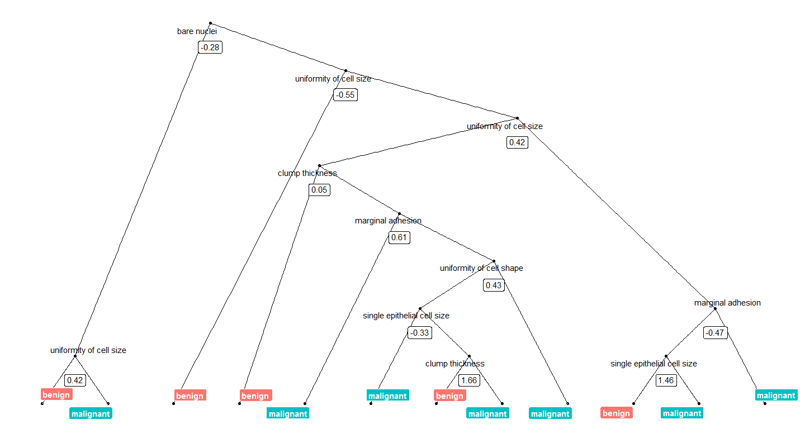
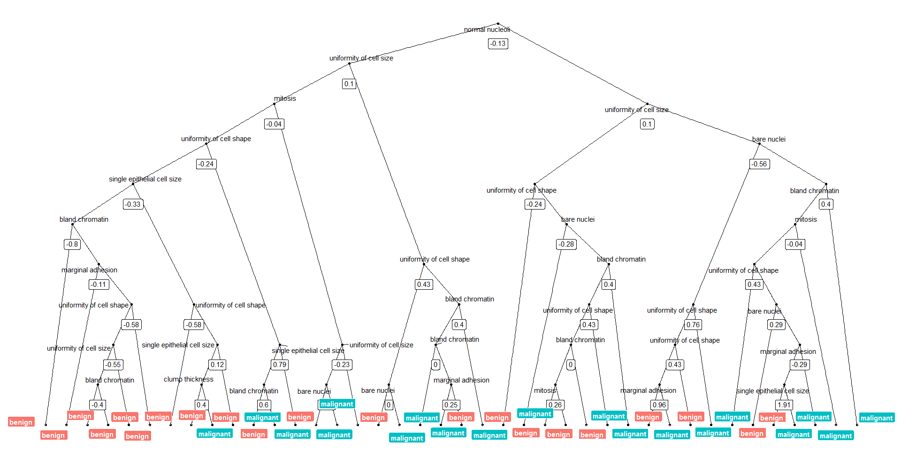

Today, I want to show how I use Thomas Lin Pedersen’s awesome ggraph package to plot decision trees from Random Forest models.
I am very much a visual person, so I try to plot as much of my results as possible because it helps me get a better feel for what is going on with my data.
A nice aspect of using tree-based machine learning, like Random Forest models, is that that they are more easily interpreted than e.g. neural networks as they are based on decision trees. So, when I am using such models, I like to plot final decision trees (if they aren’t too large) to get a sense of which decisions are underlying my predictions.
There are a few very convient ways to plot the outcome if you are using the randomForest package but I like to have as much control as possible about the layout, colors, labels, etc. And because I didn’t find a solution I liked for caret models, I developed the following little function (below you may find information about how I built the model):
As input, it takes part of the output from model_rf <- caret::train(... "rf" ...), that gives the trees of the final model: model_rf$finalModel$forest. From these trees, you can specify which one to plot by index.
library(dplyr)
library(ggraph)
library(igraph)
tree_func <- function(final_model,
tree_num) {
# get tree by index
tree <- randomForest::getTree(final_model,
k = tree_num,
labelVar = TRUE) %>%
tibble::rownames_to_column() %>%
# make leaf split points to NA, so the 0s won't get plotted
mutate(`split point` = ifelse(is.na(prediction), `split point`, NA))
# prepare data frame for graph
graph_frame <- data.frame(from = rep(tree$rowname, 2),
to = c(tree$`left daughter`, tree$`right daughter`))
# convert to graph and delete the last node that we don't want to plot
graph <- graph_from_data_frame(graph_frame) %>%
delete_vertices("0")
# set node labels
V(graph)$node_label <- gsub("_", " ", as.character(tree$`split var`))
V(graph)$leaf_label <- as.character(tree$prediction)
V(graph)$split <- as.character(round(tree$`split point`, digits = 2))
# plot
plot <- ggraph(graph, 'dendrogram') +
theme_bw() +
geom_edge_link() +
geom_node_point() +
geom_node_text(aes(label = node_label), na.rm = TRUE, repel = TRUE) +
geom_node_label(aes(label = split), vjust = 2.5, na.rm = TRUE, fill = "white") +
geom_node_label(aes(label = leaf_label, fill = leaf_label), na.rm = TRUE,
repel = TRUE, colour = "white", fontface = "bold", show.legend = FALSE) +
theme(panel.grid.minor = element_blank(),
panel.grid.major = element_blank(),
panel.background = element_blank(),
plot.background = element_rect(fill = "white"),
panel.border = element_blank(),
axis.line = element_blank(),
axis.text.x = element_blank(),
axis.text.y = element_blank(),
axis.ticks = element_blank(),
axis.title.x = element_blank(),
axis.title.y = element_blank(),
plot.title = element_text(size = 18))
print(plot)
}
We can now plot, e.g. the tree with the smalles number of nodes:
tree_num <- which(model_rf$finalModel$forest$ndbigtree == min(model_rf$finalModel$forest$ndbigtree))
tree_func(final_model = model_rf$finalModel, tree_num)

Or we can plot the tree with the biggest number of nodes:
tree_num <- which(model_rf$finalModel$forest$ndbigtree == max(model_rf$finalModel$forest$ndbigtree))
tree_func(final_model = model_rf$finalModel, tree_num)

Preparing the data and modeling
The data set I am using in these example analyses, is the Breast Cancer Wisconsin (Diagnostic) Dataset. The data was downloaded from the UC Irvine Machine Learning Repository.
The first data set looks at the predictor classes:
- malignant or
- benign breast mass.
The features characterize cell nucleus properties and were generated from image analysis of fine needle aspirates (FNA) of breast masses:
- Sample ID (code number)
- Clump thickness
- Uniformity of cell size
- Uniformity of cell shape
- Marginal adhesion
- Single epithelial cell size
- Number of bare nuclei
- Bland chromatin
- Number of normal nuclei
- Mitosis
- Classes, i.e. diagnosis
bc_data <- read.table("datasets/breast-cancer-wisconsin.data.txt", header = FALSE, sep = ",")
colnames(bc_data) <- c("sample_code_number",
"clump_thickness",
"uniformity_of_cell_size",
"uniformity_of_cell_shape",
"marginal_adhesion",
"single_epithelial_cell_size",
"bare_nuclei",
"bland_chromatin",
"normal_nucleoli",
"mitosis",
"classes")
bc_data$classes <- ifelse(bc_data$classes == "2", "benign",
ifelse(bc_data$classes == "4", "malignant", NA))
bc_data[bc_data == "?"] <- NA
# impute missing data
library(mice)
bc_data[,2:10] <- apply(bc_data[, 2:10], 2, function(x) as.numeric(as.character(x)))
dataset_impute <- mice(bc_data[, 2:10], print = FALSE)
bc_data <- cbind(bc_data[, 11, drop = FALSE], mice::complete(dataset_impute, 1))
bc_data$classes <- as.factor(bc_data$classes)
# how many benign and malignant cases are there?
summary(bc_data$classes)
# separate into training and test data
library(caret)
set.seed(42)
index <- createDataPartition(bc_data$classes, p = 0.7, list = FALSE)
train_data <- bc_data[index, ]
test_data <- bc_data[-index, ]
# run model
set.seed(42)
model_rf <- caret::train(classes ~ .,
data = train_data,
method = "rf",
preProcess = c("scale", "center"),
trControl = trainControl(method = "repeatedcv",
number = 10,
repeats = 10,
savePredictions = TRUE,
verboseIter = FALSE))
If you are interested in more machine learning posts, check out the category listing for machine_learning on my blog.
sessionInfo()
## R version 3.3.3 (2017-03-06)
## Platform: x86_64-w64-mingw32/x64 (64-bit)
## Running under: Windows 7 x64 (build 7601) Service Pack 1
##
## locale:
## [1] LC_COLLATE=English_United States.1252
## [2] LC_CTYPE=English_United States.1252
## [3] LC_MONETARY=English_United States.1252
## [4] LC_NUMERIC=C
## [5] LC_TIME=English_United States.1252
##
## attached base packages:
## [1] stats graphics grDevices utils datasets methods base
##
## other attached packages:
## [1] igraph_1.0.1 ggraph_1.0.0 ggplot2_2.2.1.9000
## [4] dplyr_0.5.0
##
## loaded via a namespace (and not attached):
## [1] Rcpp_0.12.9 nloptr_1.0.4 plyr_1.8.4
## [4] viridis_0.3.4 iterators_1.0.8 tools_3.3.3
## [7] digest_0.6.12 lme4_1.1-12 evaluate_0.10
## [10] tibble_1.2 gtable_0.2.0 nlme_3.1-131
## [13] lattice_0.20-34 mgcv_1.8-17 Matrix_1.2-8
## [16] foreach_1.4.3 DBI_0.6 ggrepel_0.6.5
## [19] yaml_2.1.14 parallel_3.3.3 SparseM_1.76
## [22] gridExtra_2.2.1 stringr_1.2.0 knitr_1.15.1
## [25] MatrixModels_0.4-1 stats4_3.3.3 rprojroot_1.2
## [28] grid_3.3.3 caret_6.0-73 nnet_7.3-12
## [31] R6_2.2.0 rmarkdown_1.3 minqa_1.2.4
## [34] udunits2_0.13 tweenr_0.1.5 deldir_0.1-12
## [37] reshape2_1.4.2 car_2.1-4 magrittr_1.5
## [40] units_0.4-2 backports_1.0.5 scales_0.4.1
## [43] codetools_0.2-15 ModelMetrics_1.1.0 htmltools_0.3.5
## [46] MASS_7.3-45 splines_3.3.3 randomForest_4.6-12
## [49] assertthat_0.1 pbkrtest_0.4-6 ggforce_0.1.1
## [52] colorspace_1.3-2 labeling_0.3 quantreg_5.29
## [55] stringi_1.1.2 lazyeval_0.2.0 munsell_0.4.3